「Lostorage incited WIXOSS」
Column of episode 6
★Episode 6 aired!
At last, the anime's back!
Today (11/18) episode 7 aired.
How did you like episode 6? Those two finally encountered each other.
★Please make me feel like attacking head-on without turning back again.
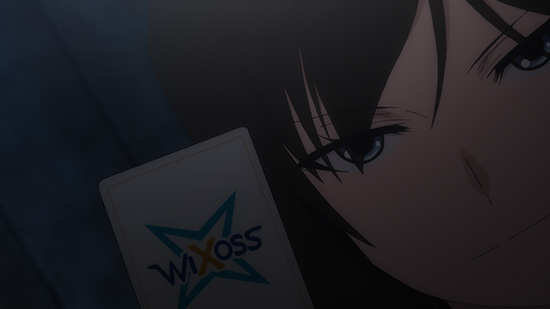 I started a part-time job.
And her very first order was to get a contract!
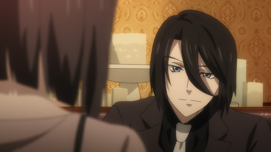 It's a super crazy fun job!
1) Find a Selector
2) Invite them once you find them
3) Report to Satomi-san
4) Profit!
It's amazing for a high schooler to have a job relating to contracts and commissions. Right, Chii-chan?
I can easily see you becoming an amazing salesman in the future.
And then you'll be like the sinister salesman Kanai-san when he was younger.
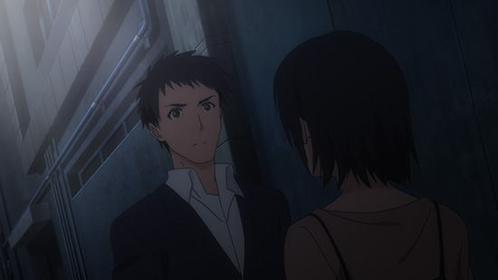 What does this high school girl want with me...
Someone would call out to me at this age?!
And she's a high school girl?!
Uoooooooo!
And then he entered Berserk mode, unable to control his desires.
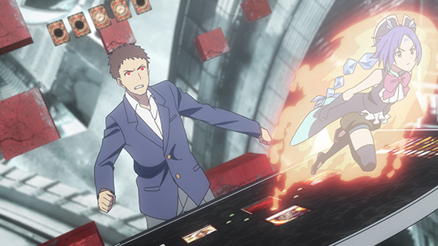
In case you were wondering, he's a Flathro user.
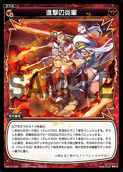 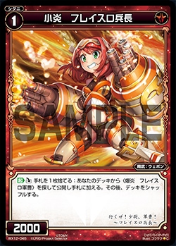 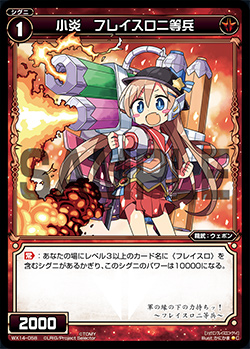 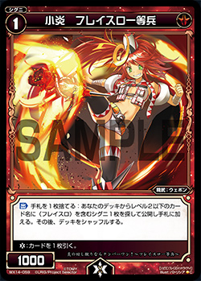 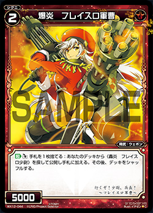 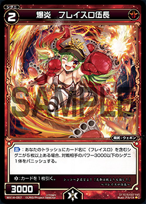 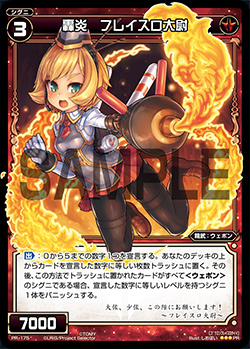 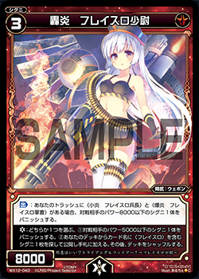 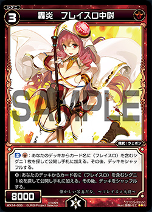 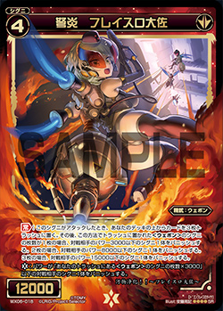 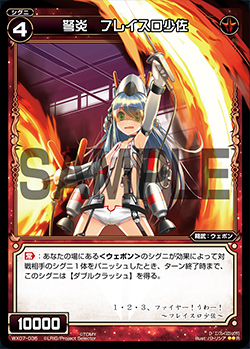 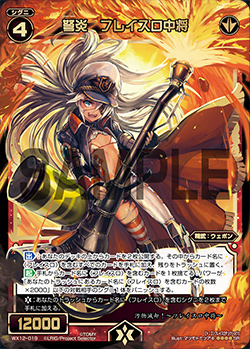 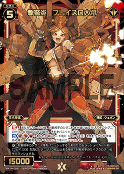
It's one of the few "Title" classes of cards in Wixoss with Signi that strengthen each other.
Her next target was this girl.
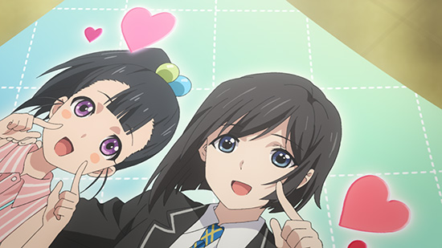 Big and round eyes, it's Rio!
Rio believes that if she's able to manipulate her memories, she'll be able to erase the fact that "Mama" passed away.
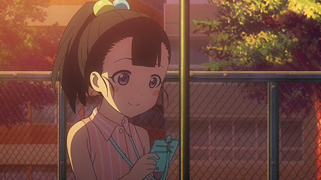 Mama (smile)
Chinatsu is pained by this. Is it really okay to impose such karma on an elementary schooler who isn't even in the Kirifuda family?
One man is thoroughly enjoying Chii-chan's wavering emotions and feelings.
Just forget all about those, Chinatsu-chan
It appears he dislikes her hesitation, that Satomi-san. I can't imagine him getting any income from the Selector contracts, so he's probably paying Chinatsu out of pocket. I wonder what his real job is. There's nobody else in the cafe, so perhaps he's the owner.
Then, Satomi-san gives her a very special bit of information.
"It will be game and set for Suzuko in one out."
Your opponent is her
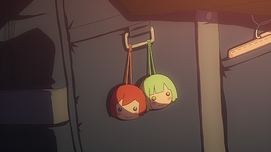 Ril and Mel are close friends
Finally, those two once again meet.
The astute viewer may have already realized, but Suzuko-chan survives.
There's no way the show could've gone on for six more episodes missing a protagonist.
So, let's take a look at the battles alongside the upgraded google translate.
It's Valor vs Cooking.
Suzuko is indecisive, and as unaggressive in battle as always.
She's down to her last coin, but doesn't show even a hint of tenacity.
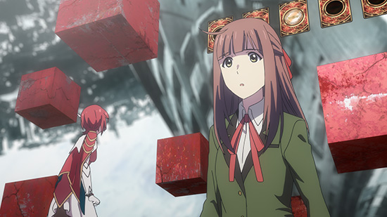
Just hold on! I'm not ready to become Suzuko yet! {by Akatsukin}
（Wait and wait! I am not ready to become a squirrel yet!） by google translate
Ril gives encouragement reminiscent of Matsuoka Shuzo. And then the battle continues on.
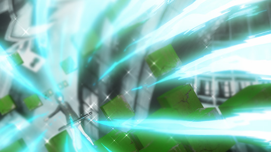 Berserk ＆total attack! by google translate
So, the field is as below.
Both sides are at level 4.
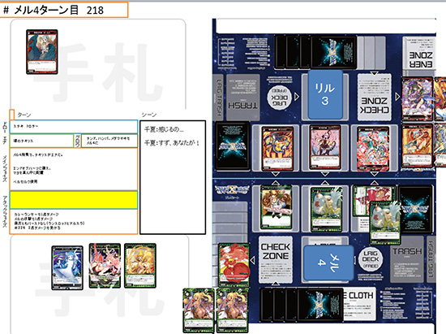
In addition, Chii-chan has used Berserk.
In the anime, you can bet as many coins as you have.
Winners have the advantage.
Suzuko stubbornly refuses to use Honest.
This is despite the fact that you should always use your last coin.
However, she chooses the seemingly impossible choice.
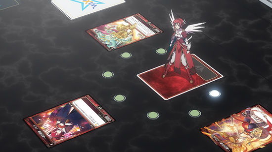
What will you do, Suzu?! {by Akatsukin}
（what will you do? Tin） by google translate
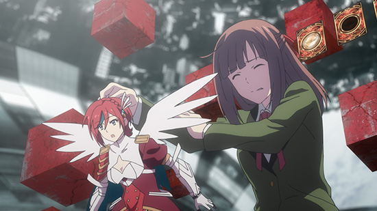 (Attack down!) by google translate
That was surprising.
To counter the Berserk & End of Heart combo, it looks like she only played weak Signi. She did this by playing Armile, which is usually a strong opening card, in the latter half of the battle (and by leaving the center open and only playing on the sides).
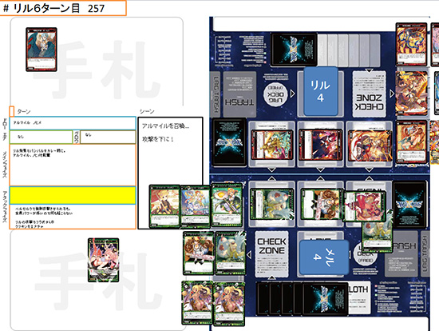
When you play Wixoss, it feels like whoever is attacking shoots out a beam.
The anime is the same.
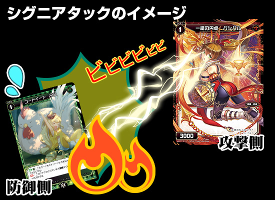
Signi attack in imagination
Left: Defender
Right: Attacker
sfx: zippidy zap
In Wixoss battles, you compare the power of the attacking card (which is turned sideways) and the defending card, and when the attacker has a lower power, it's simply Downed.
Normally nothing else happens, but if there's some effect that gets activated upon an attack then it still happens.
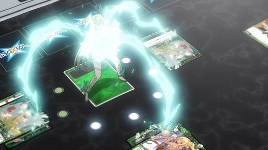
Fine, then attack! {by Akatsukin}
(Well, on attack!) by google translate
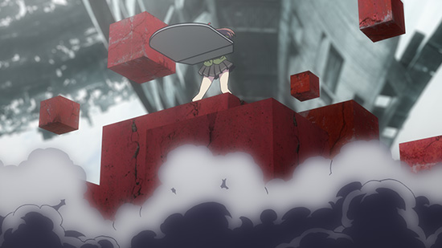
Destroy our foothold and duck!! {by Akatsukin}
(Ducking the scaffolding! It is!) by google translate
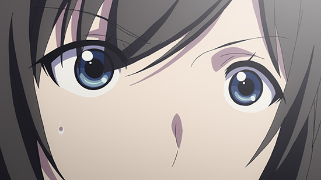
Huh?! You can do that?! {by Akatsukin}
(eh! Can you do such a thing! Is it?) by google translate
Except you can't do that in real Wixoss.
But what you can do is use an Art to get around it.
Mel's 6th turn
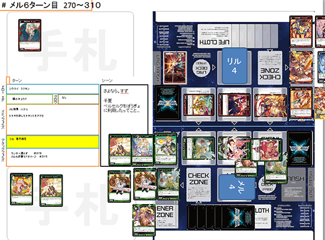
Because she was able to keep the same board state as last turn, she used Flame, Martyred Name to prevent her Signi from being banished. She's still in a desperate situation though.
And then we're reminded of fond Selector memories.
A third-party interference caused it to end early in a draw.
We were able to avoid The End of Lostorage incited WIXOSS with Chinatsu's victory and Suzuko's loss.
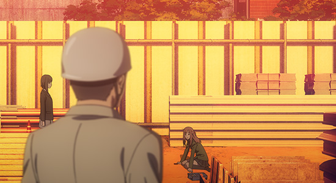
Huh? Did I do a good job? {by Akatsukin}
(that? Did I do a good job?) by google translate
しました. (Did.) by google translate
It appears that google translate thinks that Suzuko is a squirrel.
*And the story moves into the second half
Here's a list of all the characters. (Probably)
If we review the first half:
1) Suzu returns
2) Suzu starts Wixoss
3) Chinatsu starts Wixoss
4) Chinatsu enters spiral of misfortune
5) Suzu wants to meet the Chinatsu of her fun memories
6) Chinatsu wants to destroy the status quo
7) Chinatsu wants to forget the restraining Suzu from her memories
8) Suzu and Chinatsu meet
9) Their feelings miss each other
10) Surprise
That's about it. The two, and their surroundings. I wonder how it'll all end up.
Just looking at the above it appears that 2 and 3 are unnecessary.
On to the second half. Look forward to episode 7!!